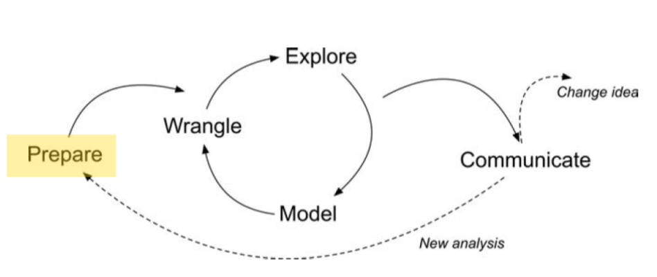
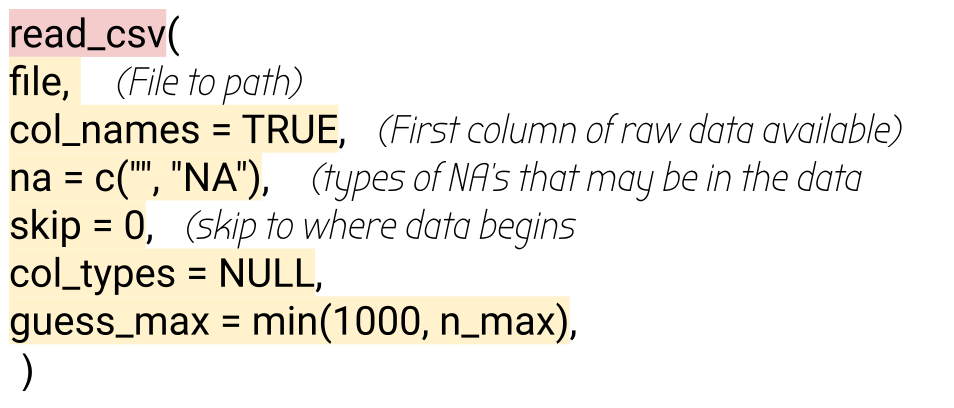
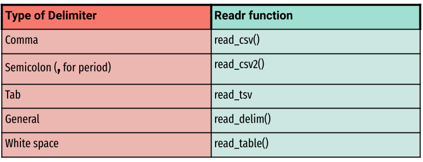

Prepare and Wrangle
LAW Module 1: A Code-A-long
Welcome to the LAW Code-a-long for Module 1
Learning Analytics Workflow (LAW) is designed for those seeking an introductory understanding of learning analytics using basic R programming skills, particularly in the context of STEM education research.
The following code-a-long is aimed at preparing you for the first section of the case study.

Module Objectives
By the end of this module:
- Know how to read in the data:
- Learners will be able to identify and describe different types of learning environments, explaining their unique features and applications in educational research.
- Characteristics of
Data:- Learners will gain proficiency in recognizing and categorizing various data formats commonly used in educational research by the end of this section.
Context of the Problem
Macfadyen, L. P., & Dawson, S. (2010). Mining LMS data to develop an “early warning system” for educators: A proof of concept. Computers & education, 54(2), 588-599.
- Explores specific online activities of students indicating their academic success.
- Focused on “early warning systems” in higher education.
- Research was extracted from course-based instructor tracking logs and the BB Vista production server.
- Data Sources
- A self-report survey assessing three aspects of students’ motivation
- Log-trace data, such as data output from the learning management system (LMS)
- Academic achievement data
- Discussion board data
Research Questions:
Which LMS tracking data variables correlate significantly with student achievement?
How accurately can measures of student online activity in an online course site predict student achievement in the course under study?
Loading and Installing packages
Load Pacakges
- First time using a package
- Do this ONLY ONCE in the “console”
Load Pacakges
👉 Your Turn ⤵ -> Answer
Reading in data
Function
Common {readr} functions to read in different types of data


Using the readr function
Using the readr function
- Use
read_csv()function to read in CSV.
Your turn 👉 Your Turn ⤵
In the corresponding script do the following:
- load in the
readxlpackage, - load in
"data/csss_tweets.xlsx"file save to a new object csss_tweets - inspect the data by
head()function
👉 Your Turn ⤵ -> Answer
# A tibble: 5 × 91
user_id status_id created_at screen_name text source
<chr> <chr> <dttm> <chr> <chr> <chr>
1 1331246991762976769 136572200862… 2021-02-27 17:54:35 InnerSchol… "@We… Twitt…
2 1331246991762976769 136572187371… 2021-02-27 17:54:03 InnerSchol… "@Bo… Twitt…
3 1331246991762976769 136572178780… 2021-02-27 17:53:42 InnerSchol… "@Co… Twitt…
4 1331246991762976769 136572174606… 2021-02-27 17:53:32 InnerSchol… "@Co… Twitt…
5 1331246991762976769 136572164488… 2021-02-27 17:53:08 InnerSchol… "Ano… Twitt…
# ℹ 85 more variables: display_text_width <dbl>, reply_to_status_id <chr>,
# reply_to_user_id <chr>, reply_to_screen_name <chr>, is_quote <lgl>,
# is_retweet <lgl>, favorite_count <dbl>, retweet_count <dbl>,
# quote_count <lgl>, reply_count <lgl>, hashtags <lgl>, symbols <lgl>,
# urls_url <lgl>, urls_t.co <lgl>, urls_expanded_url <lgl>, media_url <lgl>,
# media_t.co <lgl>, media_expanded_url <lgl>, media_type <lgl>,
# ext_media_url <lgl>, ext_media_t.co <lgl>, ext_media_expanded_url <lgl>, …What did you notice in the printed output?
import Excel Sheet
[1] "Sheet1"# A tibble: 5 × 91
user_id status_id created_at screen_name text source
<chr> <chr> <dttm> <chr> <chr> <chr>
1 1331246991762976769 136572200862… 2021-02-27 17:54:35 InnerSchol… "@We… Twitt…
2 1331246991762976769 136572187371… 2021-02-27 17:54:03 InnerSchol… "@Bo… Twitt…
3 1331246991762976769 136572178780… 2021-02-27 17:53:42 InnerSchol… "@Co… Twitt…
4 1331246991762976769 136572174606… 2021-02-27 17:53:32 InnerSchol… "@Co… Twitt…
5 1331246991762976769 136572164488… 2021-02-27 17:53:08 InnerSchol… "Ano… Twitt…
# ℹ 85 more variables: display_text_width <dbl>, reply_to_status_id <chr>,
# reply_to_user_id <chr>, reply_to_screen_name <chr>, is_quote <lgl>,
# is_retweet <lgl>, favorite_count <dbl>, retweet_count <dbl>,
# quote_count <lgl>, reply_count <lgl>, hashtags <lgl>, symbols <lgl>,
# urls_url <lgl>, urls_t.co <lgl>, urls_expanded_url <lgl>, media_url <lgl>,
# media_t.co <lgl>, media_expanded_url <lgl>, media_type <lgl>,
# ext_media_url <lgl>, ext_media_t.co <lgl>, ext_media_expanded_url <lgl>, …Hint: To learn more about functions for this package type:
?read_excel in the script.
👉 Your Turn ⤵
- Do the following:
- load in the
havenpackage, - load in “data/GPA3.dta” file save to a new object called gpa_dt
- inspect the data with function of your choice
- explain what you see
👉 Your Turn ⤵
- Do the following:
- load in the
havenpackage, - load in “data/GPA3.dta” file save to a new object called gpa_dt
- inspect the data with function of your choice
- explain what you see
👉 Your Turn ⤵ -> Answer
# A tibble: 3 × 23
term sat tothrs cumgpa season frstsem crsgpa verbmath trmgpa hssize hsrank
<dbl> <dbl> <dbl> <dbl> <dbl> <dbl> <dbl> <dbl> <dbl> <dbl> <dbl>
1 1 920 31 2.25 0 0 2.65 0.484 1.5 10 4
2 2 920 43 2.04 1 0 2.51 0.484 2.25 10 4
3 1 780 28 2.03 0 0 2.87 0.814 2.20 123 102
# ℹ 12 more variables: id <dbl>, spring <dbl>, female <dbl>, black <dbl>,
# white <dbl>, ctrmgpa <dbl>, ctothrs <dbl>, ccrsgpa <dbl>, ccrspop <dbl>,
# cseason <dbl>, hsperc <dbl>, football <dbl>Joins Overview
Let’s create Mock Data Generation
student_id name major score
1 1 Alice Math 85
2 2 Bob Physics 90
3 3 Charlie Biology 75
4 4 David Computer Science NA student_id name major score
1 1 Alice Math 85
2 2 Bob Physics 90
3 3 Charlie Biology 75
4 5 <NA> <NA> 80
❓ Why might you choose to use an inner join instead of a left join when analyzing student data alongside their scores and grades?
Full join
student_id name major score
1 1 Alice Math 85
2 2 Bob Physics 90
3 3 Charlie Biology 75
4 4 David Computer Science NA
5 5 <NA> <NA> 80What’s Next?
- Explore the R Basics column of Posit Cloud’s Recipes
- Complete the Prepare and Wrangle part of the case study
- Complete the Foundations of Learning Analytics badge
- Do essential readings for the next module